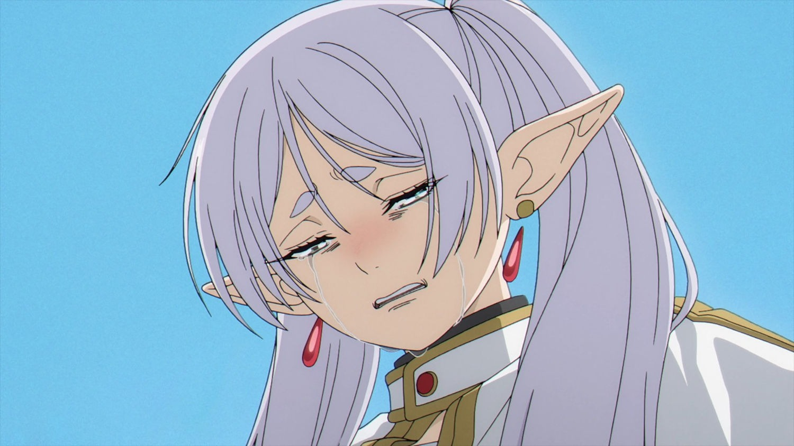
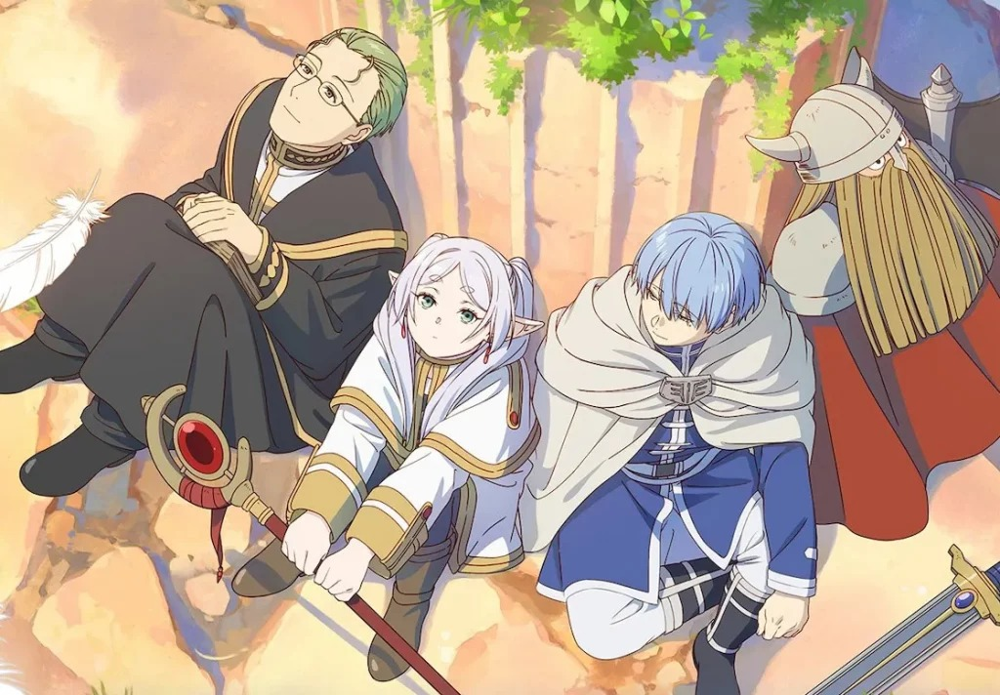
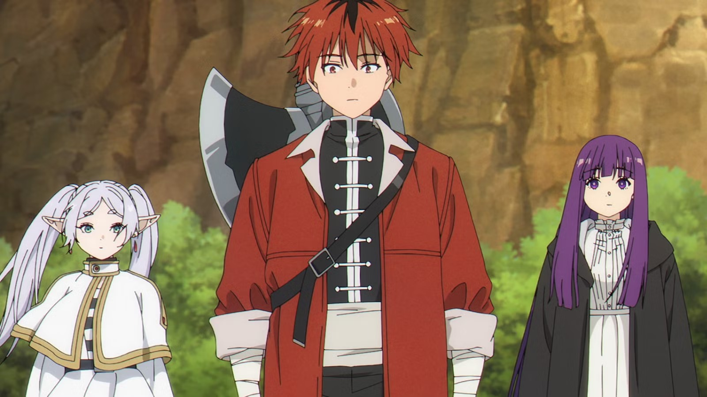

Frieren e a Jornada: A melancolia de ver o mundo como um elfo

Quase toda história de fantasia é sobre a grande guerra para derrotar o Rei Demônio. "Frieren e a Jornada" é sobre o que acontece depois. E se a "grande aventura" de 10 anos, que definiu a vida dos seus companheiros humanos, fosse para você, uma elfa, apenas um instante passageiro?
Esta é a premissa que torna Frieren uma obra-prima melancólica. A verdadeira protagonista do anime não é a Frieren; é a sua percepção do tempo.
O conflito do anime não é sobre monstros ou magia, mas sobre o arrependimento. Frieren, que viveu milênios, só começa a entender o valor das emoções e da vida de seu herói, Himmel, décadas após a morte dele. A "jornada" que acompanhamos não é para derrotar um vilão, mas sim a tentativa de Frieren de entender o que significa viver e se conectar, quando "para sempre" para ela e "uma vida inteira" para os outros são coisas drasticamente diferentes.
O Peso de "10 Anos"
O verdadeiro "incidente" que inicia a história de Frieren não é a derrota do Rei Demônio, mas o funeral de Himmel, 50 anos depois. É nesse momento que ela tem a sua epifania mais dolorosa. Ao ver a multidão chorando pelo herói, Frieren se surpreende com as próprias lágrimas e diz: "Eu mal o conhecia... sendo que passamos 10 anos juntos."
Para um elfo que já viveu mais de mil anos, 10 anos são literalmente um piscar de olhos, menos de 1% da sua existência. E o que torna isso mais trágico é que o "Grupo do Herói" não era um time lendário de escolhidos. Eles eram, na verdade, um bando de desajustados. O próprio Himmel não era o "Herói da Profecia". Ao falhar em tirar a espada lendária da pedra, ele provou ser um "herói falso", mas isso nunca o impediu. Como ele mesmo diria: "Eu posso ser um herói falso, mas vou derrotar o Rei Demônio e trazer a paz. Assim, eu me torno o herói verdadeiro." E, como todos sabemos, foi dito e feito: Himmel derrotou o Rei Demônio e trouxe a paz para a humanidade. Junto a esse homem vaidoso e determinado, estavam Heiter, um padre bêbado; Eisen, um guerreiro anão que tinha medo de lutar; e a própria Frieren, uma maga apática. No entanto, por uma década, esse grupo disfuncional escolheu salvar o mundo, e se tornou uma família. Durante esse tempo, Frieren tratou seus companheiros com carinho, mas também com o distanciamento de quem sabe que vai viver séculos após todos eles morrerem. Ela não parou para "perder tempo" colecionando memórias triviais.
O peso que ela descobre no funeral não é o da aventura em si, mas o do arrependimento. Ela percebe tarde demais que, enquanto ela viajava com "colegas de trabalho", seus companheiros — Himmel, Heiter e Eisen — estavam vivendo a maior, mais importante e definidora década das suas vidas inteiras. O arrependimento de Frieren é devastador: "Por que eu não tentei te conhecer melhor?". É esse peso que a faz embarcar em sua nova jornada; uma peregrinação não apenas para honrar o passado, mas para tentar, pela primeira vez, entendê-lo.
Aprendendo a Viver o "Agora": Os Espelhos do Passado
Se a primeira jornada foi sobre "o feito", esta segunda é sobre "as pessoas". E, ironicamente, Frieren não começa essa jornada por vontade própria, mas quase por obrigação, ao aceitar os pedidos de seus antigos companheiros para cuidar de Fern e Stark.
O que ela não esperava era que esse novo grupo funcionaria como um espelho direto do antigo, forçando-a a confrontar o passado:
1. O Paralelo entre Fern e Frieren
Fern é, em muitos aspectos, o oposto polar de Frieren. Enquanto Frieren é apática, lenta e se perde em sua própria noção de tempo, Fern é a personificação do "agora". Ela age como a figura responsável do grupo, ditando o ritmo, controlando o dinheiro e, literalmente, acordando Frieren de manhã. Fern não permite que Frieren se perca em sua própria noção de tempo; ela a puxa e a ancora à força no ritmo humano, dia após dia. É a relação que Frieren deveria ter tido com seus companheiros: uma troca, em vez de apenas observação.

2. O Paralelo entre Stark e Himmel
Este é o paralelo mais comovente. Frieren vê em Stark um reflexo direto do Himmel que ela nunca entendeu. Stark não é apenas um guerreiro inseguro; ele é fundamentalmente gentil, um pouco vaidoso e obcecado em "parecer legal" (assim como Himmel era com suas estátuas). Quando Stark para a jornada para ajudar uma vila ou quando ele se esforça para comprar um presente, Frieren vê o mesmo tipo de "heroísmo bobo" e bondade desinteressada que Himmel demonstrava. Ao cuidar de Stark, ela está, na verdade, tendo uma segunda chance de apreciar e entender as qualidades exatas que ela ignorou em Himmel por uma década.
A beleza da nova jornada está aí: Frieren não está apenas "recriando memórias". Ela está sendo forçada a criar memórias novas com versões "recicladas" de seus amigos. Ela está aprendendo a valorizar os pequenos momentos não só por causa do passado, mas porque Fern e Stark estão ao seu lado, exigindo sua presença no presente.
Conclusão: A Segunda Chance de Frieren
A jornada de Frieren para "ver" Himmel novamente não é apenas uma peregrinação física; é uma jornada para dentro de si mesma. E a elfa que vemos agora, graças a Fern e Stark, não é a mesma que chorou no funeral do herói décadas atrás.
Ela está mudando. Cada nova cidade, cada magia "boba" que ela coleta, é uma tentativa de recapturar o que ela perdeu. Suas descobertas são profundamente melancólicas. Ela está aprendendo a valorizar a "passagem do tempo" não mais como uma inconveniência, mas como o tecido da própria vida humana.
O mais doloroso, e bonito, é vê-la processar o amor. Frieren está lentamente descobrindo que as memórias triviais que ela guardou de Himmel — ele arrumando seu cabelo, elogiando sua magia, ou apenas sendo um narcisista vaidoso — não eram triviais. Eram a forma dele de amá-la. E agora, décadas tarde demais, ela está percebendo que também o amava.

O anime não é sobre uma elfa imortal lamentando o passado. É sobre uma elfa imortal que finalmente decidiu viver. Através de Fern e Stark, ela está tendo uma segunda chance de não cometer o mesmo erro. A sua melancolia é, no fim, uma história de esperança: a prova de que nunca é tarde demais para aprender a se conectar e a valorizar o "agora".